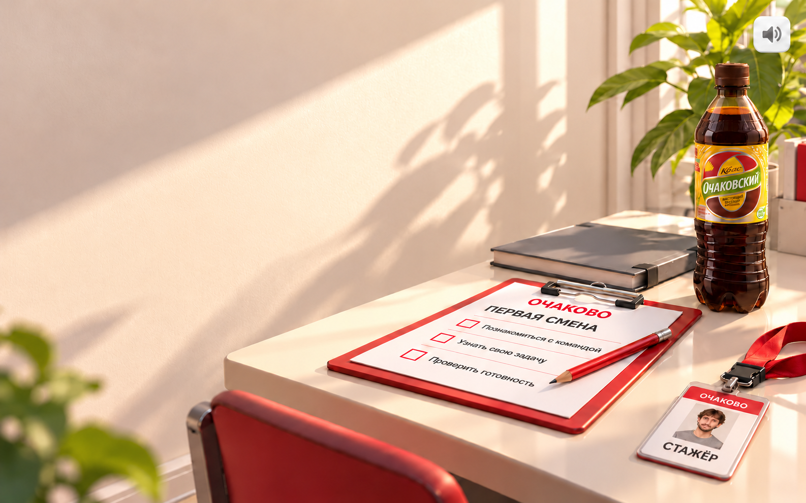

<!doctype html>
<html lang="ru"><meta charset="utf-8"><meta name="viewport" content="width=device-width,initial-scale=1">
<title>Главное меню — За работу!</title>
<style>
@font-face{font-family:ProximaMenu;src:url('../../../brand/assets/fonts/ProximaNova-Bold.woff2') format('woff2');font-weight:700;font-style:normal;font-display:block}
*{box-sizing:border-box}html,body{margin:0;width:100%;height:100%;overflow:hidden;background:#f6f5f2}
.scene{position:relative;width:100vw;height:100vh;container-type:inline-size}
.scene img{position:absolute;inset:0;width:100%;height:100%;object-fit:fill}
.start{position:absolute;left:11.1%;top:36.9%;width:33.5%;height:12.3%;margin:0;border:0;border-radius:0;padding:0 24px;background:#D50032;color:#fff;font-family:ProximaMenu,sans-serif;font-weight:700;font-size:3.53cqw;line-height:1;white-space:nowrap;display:flex;align-items:center;justify-content:center;box-shadow:none;letter-spacing:0;font-synthesis:none}
</style>
<main class="scene"><button class="start" type="button">За работу!</button></main>
<script>document.fonts.ready.then(()=>{document.documentElement.dataset.fontLoaded=String(document.fonts.check('700 56px ProximaMenu'));document.documentElement.dataset.labelLines=String(document.querySelector('.start').scrollWidth<=document.querySelector('.start').clientWidth)});</script></html>